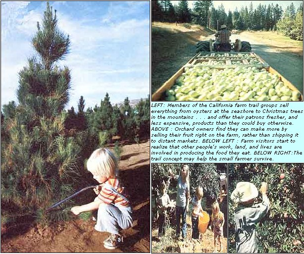

Juanita Browne reports on a proven method to increase profits from produce.
The owners of a growing number of small California farms-outfits which sell everything from oysters at the seashore to Christmas trees in the mountains-have found a delightful way to compete with large commercial growers. They've formed "farm trails" within their counties or general areas, and distribute maps that show the public each farm's location and list the commodities it offers for sale. (Although most trail members market standard varieties of fruits, vegetables, and meat products . . . some specialize in such exotic items as Netherland dwarf rabbits and baby llamas.)
By selling directly to the consumers, "trail" farmers reduce their overhead on sorting, packing, and-most important in these days of climbing fuel prices transportation costs. On top of that, they can generally ticket their goods at higher prices than they'd normally receive. At the same time-since the middleman is eliminated-their customers pay less than supermarket prices . . . get fresher, tastier, and more nutritious food than they could otherwise buy . . . and have a chance to take a close look at farm life, to boot!
FROM THE BEGINNING
The first California farm trail was organized in 1983, when a group of independent apple growers-located in El Dorado County's gold country-banded together to form the Apple Hill Growers' Association. Most of the farmers operated small (one- to two-acre) orchards, and some were already selling their produce at roadside stands. However, they felt that if they could just attract the public's attention, they could increase their business.
Therefore-at the start of the harvest season radio, television, and other media people were asked to visit the orchards and sample fresh-from-the-tree apples (and fresh-from-the-oven apple goodies). The press picnics were a rousing success, and the Growers' Association was soon well-known.
The public was then invited to a selected farm for an "apple smorgy" . . . where a variety of products, including a veritable feast of freshly baked apple goods, were sold. This homegrown event soon attracted enough customers (as many as 100,000 people turned out) to create a traffic problem. To alleviate the unfortunate by-product of success, later smorgles were "shared" by several different orchards.
The Apple Hill Growers' Association (which now has about 35 members) also prints-and distributes free to the public-maps that show locations of the trail farms. . . and a small newspaper, Apple Hill Cider Press, that features advertisements for (and information about) the trail members.
THE TRAILS GROW
The idea spread (as good notions tend to do). At present, there are 11 such fresh-food routes-with 30 to 150 members apiece-meandering through the Golden State . . . and their business is booming. One of the newest trail groups to be established is the Yolano Harvest Trails, and its members' experiences with organization and promotion might be helpful to others attempting to set up similar marketing systems.
Patrick Marer, Yolano's president, recalls that while food prices were increasing, farmers in his area were being paid less for their goods . . . and many had trouble covering production costs, much less earning a living. Therefore, a few growers in Yolo and Solano counties decided to find out how farm trail associations were doing business.
"After we had that information, and some idea of our needs and goals, we announced a public meeting . . . using the local newspapers for publicity. About 50 farmers attended, and we asked each of them to sign up for work on one of five committees: legal, membership, publicity, map production, and distribution."
Each member paid $25 (the only fee involved) to be included on the map. Local tourist businesses, and other firms interested in promoting the area in general, also donated from $10 to $15.
Since all the work was done by member volunteers, the group's primary expense was the cost of printing maps and other forms of publicity. Members with some artistic talent did the artwork and layout, and-though the map is revised each year-so much of the already prepared art is reusable that the same format is kept.
The location of each member farm, and points of local historical interest as well, are indicated on the trail guide with a number and a dot. The map also lists the products available along the route, provides blossom and harvest calendars, contains a short history of the area, and includes a directory of the associate and supporting members (which gives each farm's name, identifies its owners, lists its address and phone number, describes the commodities offered . . . and notes the operating seasons, days, and hours).
"We also have attractive road signs that are marked with the same symbol as that shown on the map," Marer adds. "These are provided to members for $15, a one-time charge that covers the cost of having the signs made. The member's map number is on his sign, too, and that helps customers locate the farm they're looking for. "
Trail maps are distributed by members . . . through Chamber of Commerce offices, businesses that support the organization, real estate firms, churches, and community groups . . . and at strategically located service stations, restaurants, and tourist attractions. The organization also sends out news releases-to local newspapers, magazines, and broadcasting stations-which bring in valuable free publicity. (In such announcements, the public is asked to include a self-addressed, stamped envelope when writing for a copy of the guide.)
MUTUALLY BENEFICIAL
Although the different farm trails now in operation vary in organizational details, the main expense is always the preparation and printing of the maps (such costs run from 5 cents to 10 cents per copy). Most groups collect a $20 to $50 yearly membership fee to handle expenses. Some trails also receive aid from their local farm bureaus, and from other organizations interested in helping small scale growers stay in business. Most rely on their members to get the trail guides published and distributed, arid to assist with the publicity.
In general, if you grow a crop and pay your annual dues, you'll qualify for membership in a farm trail group. In most associations, the kind of items sold and the prices charged are considered personal matters, though some groups set more stringent standards . . . such as requiring members to produce a certain percentage of the commodities they sell, and to meet health and operation standards set by a Board of Directors.
The bottom line, of course, is whether or not trail organizations have really helped the small scale crop producers. Most members reply to that question with an emphatic "Yes, they have! " . . . while others claim increases of only 10 to 30%.
One convinced member-the president of Sonoma County Farm Trails, Jack Kroutbelieves that farm trail groups may help small farmers survive in the future. "When I joined Sonoma seven years ago," he says, "less than 100 of my pheasants were sold for consumption in the San Francisco Bay Area. Now I sell about 1,000 dressed birds each year, and I attribute the entire increase to the farm trail."
Also, the growers who advertise their wares as "organic" report that customers seek them out specifically, and-although some get a slightly higher price for their more healthful food-others say they charge about as much as do non-organic growers on the same trail.
HIGHER PRICES, BETTER BUYS
Generally speaking, the increase in trade along produce routes will depend on the location of the farms and the items sold. If a grower's property is located close to a main highway or near a suburban district-and if the farmer raises a variety of produce, offers quality products, gives good service, and asks a fair price-he or she will generally attract many customers and earn large profits.
But, because of differences in just such factors as location and population density, some trail farmers have as few as 30 to 40 customers a year . . . while others draw 1,000 to 2,OO0. A few buyers return weekly or monthly during the harvest season, but most come only once or twice a year . . . each spending an average of between $5.00 and $20.00 a visit.
Keep in mind, though, that-by dealing directly with' the public-the farmers usually receive a better price for their goods than they would otherwise. For example, Gene and Margie Merrill, who belong to the Yolano Harvest Trails group, report that they got $1.85 a pound for shelled almonds last year . . . while the wholesale price was $1.35 a pound. And Ernie Bierwagen, of the 49er Fruit Trail, says he can generally bring in about $2.00 a box more for his apples than he could if he sold them at more distant markets.
Although the trail-member growers are quick to point out that this form of retailing has the disadvantage of keeping them pinned to the farm, they also note that it has certain advantages beyond the extra cash. For one thing, they can meet consumers face-to-face, which gives them an opportunity to tell a buyer about their produce, and about varieties that aren't always available in supermarkets. The growers can also suggest how to use, store, and preserve various products, and thereby often increase their sales.
Marc Lasher (of the Getting It Straight Trail) adds, "When customers buy their produce at the farm, they learn there's more to food than package and price. They start to realize that people's work, land, and lives are involved in making the product available.
"The farmers-on the other hand-get the satisfaction of a job well done when they hear, for example, that they have 'the world's best tomatoes'. As a result, both buyer and seller start to understand that we're all intricately connected . . . and that we do have a say as to how we live our lives."
Most trail organizations-such as those listed below-are eager to share their knowledge with others who are interested in starting homegrown produce routes.
Apple Hill Growers
P.O. Box 494
Camino, California 95709
Butte County Harvest Trails
P.O. Box 3303
Chico, California 95927
Country Crossroads
1368 North Fourth Street
San Juan, California 95112
El Dorado County Christmas Tree Growers
542 Main Street
Placerville, California 95667
49er Fruit Trail
Route 2, Box 1981
Grass Valley, California 95945
Getting It Straight
2348 North Cornelia
Fresno, California 93711
Harvest Time
P.O. Box 0
Brentwood, California 94513
Napa County Farming Trails
4075 Solano Avenue
Napa, California 94558
Redwood Country Farms
P.O. Box 323
Arcata, California 95521
Sonoma County Farm Trails
P.O. Box 6043
Santa Rosa, California 95046
Yolano Harvest Trails
P.O. Box 484
Winters, California 95694
If you'd like to know more about farm trails, simply send your request for information and maps-along with a self-addressed, stamped envelope, and a dollar for their trouble-to any of the foregoing organizations. Happy trails!
|
 |
|
|